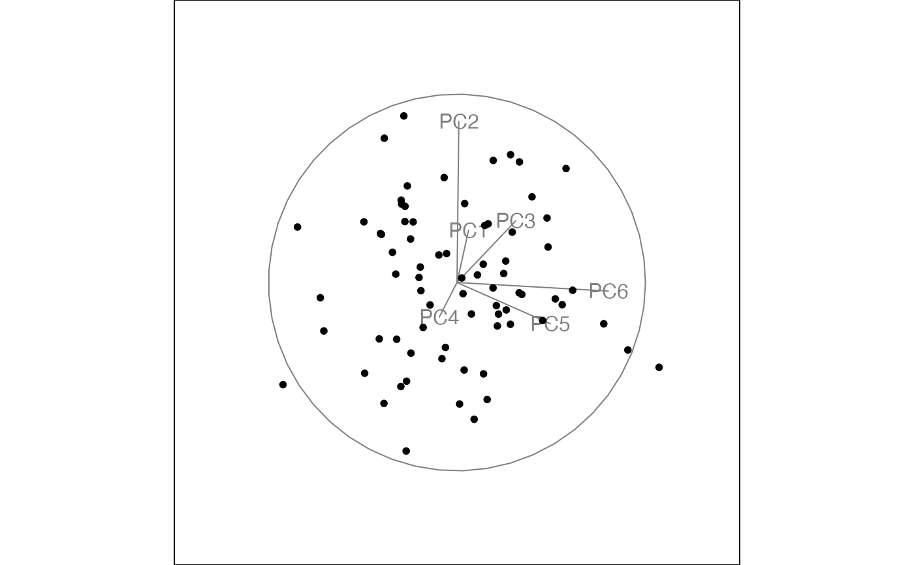
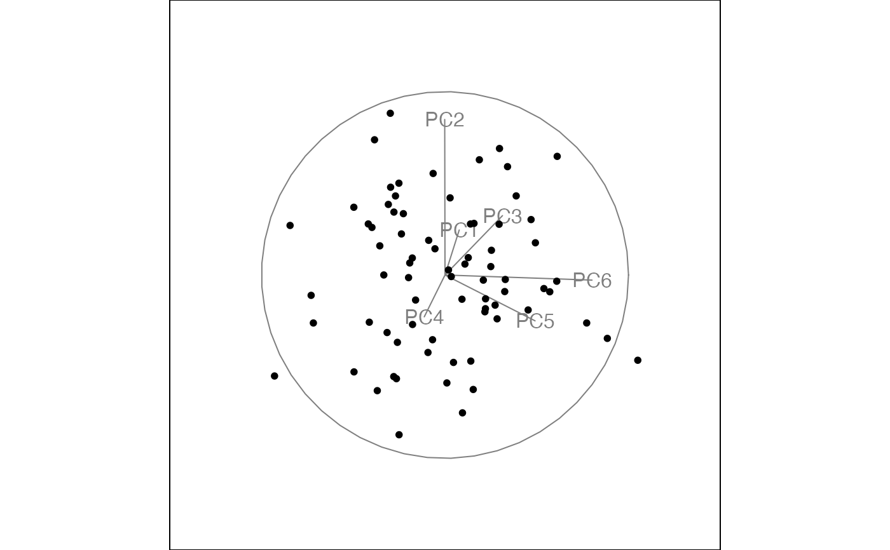
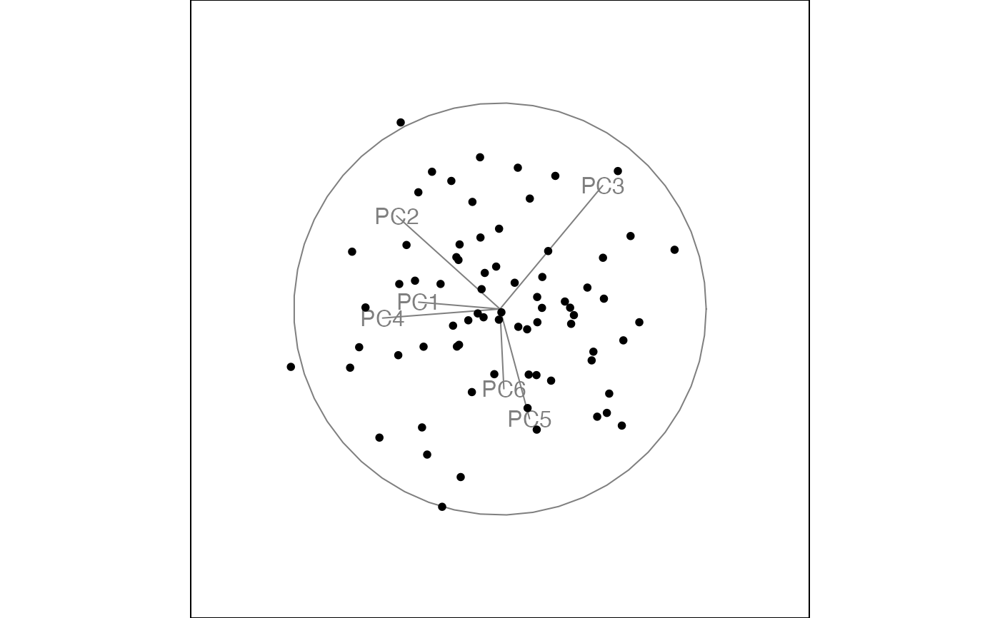
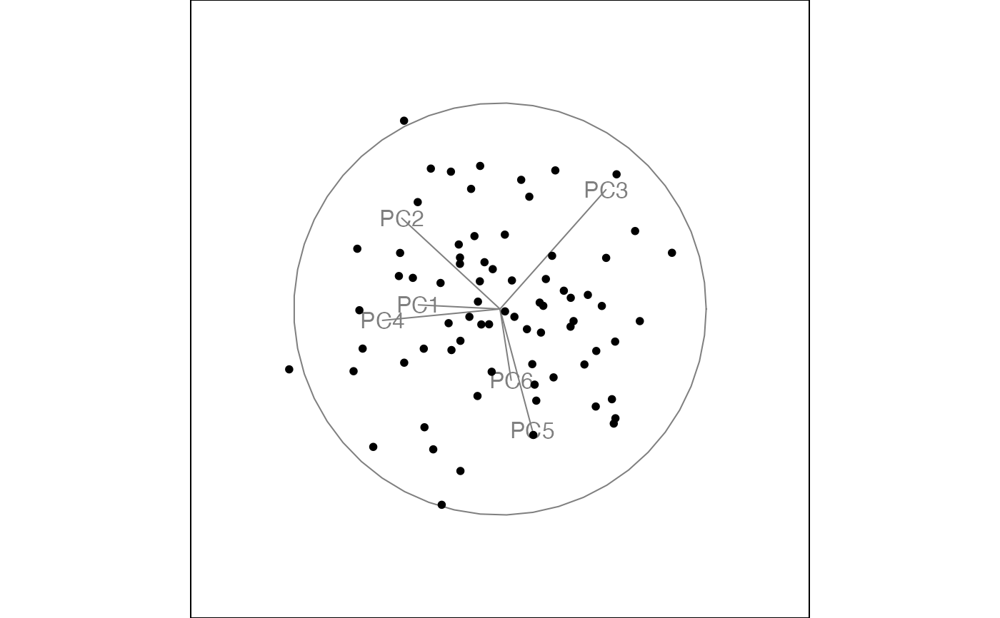
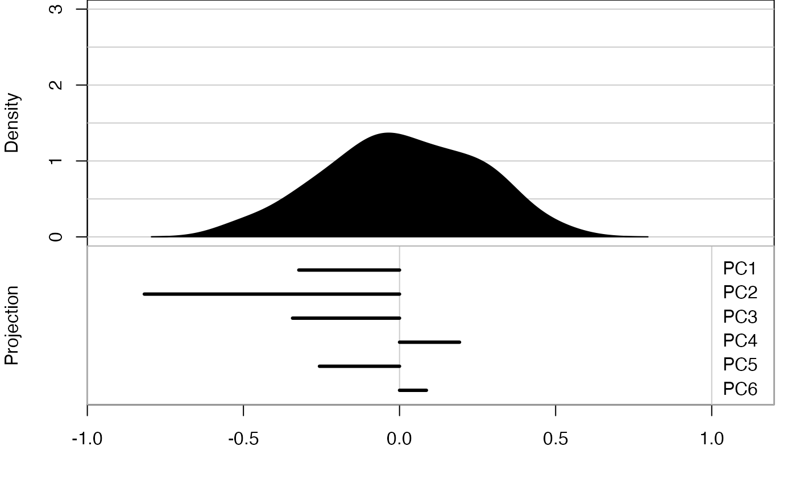
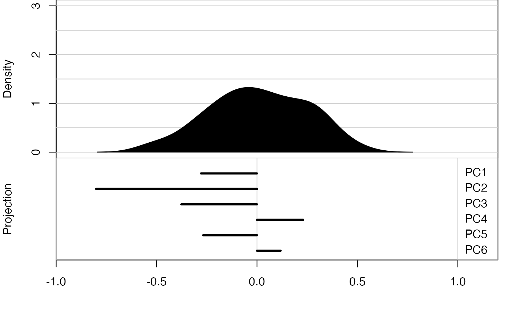
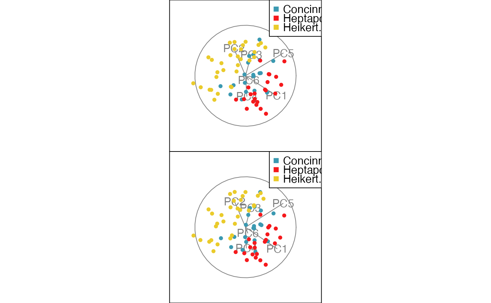

Instead of choosing new projections at random like the grand tour, the guided tour always tries to find a projection that is more interesting than the current projection.
Usage
guided_tour(
index_f,
d = 2,
cooling = 0.99,
max.tries = 25,
max.i = Inf,
search_f = search_geodesic,
n_jellies = 30,
n_sample = 100,
alpha = 0.5,
...
)Arguments
- index_f
the index function to optimise.
- d
target dimensionality
- cooling
the amount the size of the search window should be adjusted by after each step
- max.tries
the maximum number of unsuccessful attempts to find a better projection before giving up
- max.i
the maximum index value, stop search if a larger value is found
- search_f
the search strategy to use:
search_geodesic,search_better,search_better_random,search_polish. Default issearch_geodesic.- n_jellies
only used for
search_jellyfish, the number of jellyfish to use- n_sample
number of samples to generate if
search_fissearch_polish- alpha
the initial size of the search window, in radians
- ...
arguments sent to the search_f
Details
Currently the index functions only work in 2d.
Usually, you will not call this function directly, but will pass it to
a method that works with tour paths like animate,
save_history or render.
See also
cmass, holes and lda_pp
for examples of index functions. The function should take a numeric
matrix and return a single number, preferably between 0 and 1.
search_geodesic, search_better,
search_better_random for different search strategies
Examples
flea_std <- apply(flea[,1:6], 2, function(x) (x-mean(x))/sd(x))
animate_xy(flea_std, guided_tour(holes()), sphere = TRUE)
#> Target: 0.806, 0.7% better
#> Using half_range 3.8


# \donttest{
animate_xy(flea_std, guided_tour(holes(), search_f = search_better_random), sphere = TRUE)
#> Target: 0.803, try: 1, accept
#> Using half_range 3.8


animate_dist(flea_std, guided_tour(holes(), 1), sphere = TRUE)
#> Target: 0.828, 6.3% better
#> Using half_range 3.8


animate_xy(flea_std, guided_tour(lda_pp(flea$species)), sphere = TRUE, col = flea$species)
#> Target: 0.855, 15.0% better
#> Using half_range 3.8

# save_history is particularly useful in conjunction with the
# guided tour as it allows us to look at the tour path in many different
# ways
f <- flea_std[, 1:3]
tries <- replicate(5, save_history(f, guided_tour(holes())), simplify = FALSE)
#> Target: 0.909, 24.4% better
#> Target: 0.972, 6.9% better
#> No better bases found after 25 tries. Giving up.
#> Final projection:
#> -0.975 -0.012
#> -0.146 0.793
#> 0.171 0.609
#> Target: 0.853, 28.4% better
#> Target: 0.946, 10.8% better
#> Target: 0.970, 2.6% better
#> Target: 0.972, 0.2% better
#> No better bases found after 25 tries. Giving up.
#> Final projection:
#> -0.868 -0.444
#> -0.479 0.626
#> -0.134 0.641
#> Target: 0.896, 18.5% better
#> Target: 0.948, 5.8% better
#> Target: 0.967, 2.0% better
#> Target: 0.972, 0.5% better
#> No better bases found after 25 tries. Giving up.
#> Final projection:
#> -0.712 0.669
#> 0.404 0.639
#> 0.574 0.380
#> Target: 0.762, 3.2% better
#> Target: 0.887, 16.4% better
#> Target: 0.969, 9.2% better
#> Target: 0.972, 0.4% better
#> No better bases found after 25 tries. Giving up.
#> Final projection:
#> -0.415 0.879
#> -0.766 -0.198
#> -0.491 -0.434
#> Target: 0.883, 18.0% better
#> Target: 0.970, 9.8% better
#> Target: 0.972, 0.2% better
#> No better bases found after 25 tries. Giving up.
#> Final projection:
#> -0.878 0.447
#> -0.442 -0.620
#> -0.183 -0.645
# }